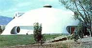
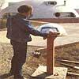
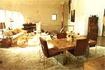
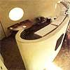
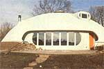
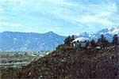

Nudged forward by the energy crisis of the 70's (which shows no signs of abating during the 80's), the U.S. construction industry has made some well-meaning-but too frequently haphazard-attempts at building energy-efficient housing. In fact, most new structures tend to be far better insulated than their ten-year-old counterparts, and the weather-stripping business has never been healthier. Also, some of the more progressive contractors have actually begun to orient buildings in such a way that they can catch the sun's heat . . . and it's not at all rare, these days, to see more glass on the south side of a house than on its northern exposure.
However-except for the efforts of a handful of rebellious designers-the basic configuration of the U.S. home remains unchanged: rectangular . . . with wooden stud construction, some sort of porous siding packed with insulation, and a peaked roof on top. Far too few architects seem willing to accept the inherent faults in such "standard" housing. Let's face it: Attempting to make a conventional structure truly energy-efficient can often be akin to building a dam which is weak by design . . . and then patching it where it leaks.
HEAT LOSS
Obviously, the root of the problem has been that-until recently-the economics of energy has never forced us to look at our buildings from the point of view of conservation . . . even though the basic guidelines for making the best use of energy have been available to heat engineers for decades. For instance, the heat loss of any structure can be described by the relationship of five factors: surface area, insulation,storage,leakage(called infiltration), and the difference between inside and outside temperatures (indicated by the symbol at, in heating lingo). Examples of buildings that combat heat loss through each of the five areas have been printed in this magazine since its birth . . . and some of the approaches-such as earth-sheltering-have managed to combine a number of energy-saving methods in a single structure.
But what would happen if an architect were to look at all five of the heat loss factors before designing a building? The form developed as a result of such an analysis definitely wouldn't be the all-American box. For one thing, it's difficult to conceive (within the range of practical construction methods) of a shape that has more surface area per unit of floor space than does a cube. And our ideal heat-holding structure certainly wouldn't be built from any material that requires the addition of both insulation and sealing to be energy-efficient.
AREA = 4 pie r 2
When California-based designer Lloyd Turner decided to take the heat-loss equation to his drafting board, the result was a totally new kind of structure-formed by an innovative blending of known technologies-that just may end up revolutionizing the housing industry.
First of all, to an architect who's attempting to minimize heat-robbing wall and roof area, a rounded structure is nearly irresistible. By using a portion of a sphere (or a paraboloid or an ellipsoid), the surface area for a given floor space can be reduced by as much as 40% from that of a cube. Thus the economy of the dome shape is undeniable ... and-from the standpoint of comfort-a circular room will not have the chilly corners that are frequently found in angular abodes.
R-34 INSULATION
Of course, many people already know about the basic benefits of dome-type construction. But Mr. Turner's buildings have advantages beyond those of the familiar geodesics. Lloyd felt that the most economical and efficient way to thoroughly insulate a house would be to build the walls themselves from insulation. That concept led him to look into the sprayed foam and concrete techniques which were just being developed at the time. And, over the last ten years, a spray system has been developed which can produce self-supporting domes.
Tecton Corporation-a Colorado-based company that builds according to the "Turner method" and licenses other contractors-uses a four-inch layer of polyurethane (with an effective R-value of 34) as the exterior covering, and then applies two inches of metal-reinforced concrete as the interior wall.
While placing a building's insulation on the outside may sound a bit strange at first, it makes perfect sense on closer examination. Because the concrete mass is in contact with the heated air space of the structure's interior, it absorbs and holds the home's warmth. . . and the exterior polyurethane insulation prevents the thermal mass from releasing its stored BTU outdoors.
UP, UP, AND AWAY
Perhaps the most amazing thing about the foam dome concept is the elegant simplicity of this form of construction. First a slab or perimeter foundation is poured, and then a licensed Tecton crew attaches a clamping ring to the base. The clamp holds down a nylon bag (similar to a hot air balloon), which is inflated by a large compressor, and the materials are then sprayed directly onto the inner surface of the air filled form. Once the foam and concrete have set, the balloon is removed (it can be reused as many as four times), and the dome's exterior is painted with a protective plastic coating.
From start to finish, the erection of the shell takes only two weeks. Thus the interior finishing can proceed under shelter and in relative comfort . . . even during harsh winter months in northern climates. And because the dome shape distributes loads laterally-resulting in incredibly high compressional strength-there is no need for any interior load bearing walls. Actually, the internal partitions in such a house could be movable . . . to allow for redesigning the floor plan at the owner's whim. (Another advantage of the high load capabilities of the domes is that the buildings are strong enough to be placed underground.)
50% ENERGY SAVINGS
One Colorado dome-which MOTHER visited in February of this year-has been occupied for almost three years now . . . and the residents find that their electrical bills are about half those of their neighbors who live in conventional homes with equivalent floor space. Furthermore, the Tecton-house dwellers claim that the majority of their power consumption goes to the dehumidifier which they've found to be necessary in the incredibly airtight structure. (In fact, the building is so tightly sealed that turning on the exhaust fan on its electric range produces enough depression to cause one's ears to pop!)
Another Tecton dome (this one's located out on the plains of Nebraska) is entirely heated by the solar gain from its south-facing windows . . . with occasional help from a backup woodstove. Again, a combination of the home's insulative and storage capability-along with its minimal surface area and complete control of infiltration-keeps the heat demands of the structure low.
COMPARABLE COSTS
Though the materials cost for a Tecton-type dome is relatively high, the rapid rate of construction keeps labor expenses low . . . resulting in an average square-footage figure of just $32. The folks at Tecton look forward to a time when they can establish a wide network of licensed contractors who will build enough domes to bring the costs down even further.
Back in Tecton's early days, it was assumed that there would be little demand for individual dome residences. In fact, the company's earliest projects were almost exclusively large commercial structures. One example-the Holly Sugar Warehouse in Delta, Colorado-is 120 feet in diameter. But in cooperation with Stratidome, the Tecton-licensed builder in Boulder, Colorado (whose president, Bill Milburn, does Tecton's architectural and engineering work and is himself deeply committed to the polyurethane and concrete dome concept), eight residence domes have now been constructed and many more are in the planning stages.
Perbaps it came as a surprise to the firm that the public would so easily accept the rather unconventional appearance of a Tecton dome (Tecton's John Smith and Mert Hall cringe at the often applied"flying saucer" comparison), but the company's sprayed-foam domes seem to be moving out of the range of novelty and into the class of accepted housing design. The reasons are simple: Such dwellings are efficient, and they're delightful to live in. Though the houses appear small from outside, they're spacious inside . . . and the acoustics of the rounded structures have to be heard to be believed. It isn't surprising that the best salespersons for Tecton dome homes are the families now living comfortably inside them.
EDITOR'S NOTE: If you'd like more details about Tecton domes-including specifics on how to become a licensed contractor for the process-you can obtain an information packet by sending $4.00 to Tecton Corporation, Dept. TMEN, 111 West Fillmore, Colorado Springs, Colorado 80907.
|
 PHOTOS BY THE MOTHER EARTH NEWS (restricted) STAFF AND TECTON CORP.
|
 The heat loss of any structure can be described by the relationship of these five factors; surface area, insulation, storage, leakage and the difference between inside and outside temperatures. Lloyd Turner developed a paraboloid/ellipsoid structure and built the walls from insulation material. |
 A dome's interior seems remarkably spacious when compared to the unassuming exterior dimensions. |
||
|
 Because no inside walls are load-bearing, partition placement can be determined by the owner's fancy. |
 Because no inside walls are load-bearing, partition placement can be determined by the owner's fancy. |
The angled walls common to conventional structures aren't necessary in a Tecton dome. |
||
|
 A soon-to-be finished foam and concrete abode boasts a view of Pike's Peak. |
|
|